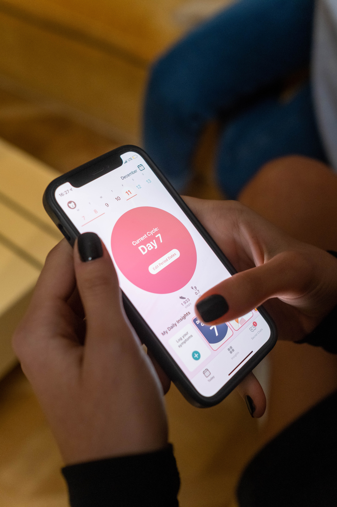

Patient Connect
$200/month (Full Package)
Patient Connect is our premium service at HMU Communications. This service offers a video chat and meeting software for doctors all over the world. Your company can join the thousands of other medical firms, hospitals, clinics, and doctor’s offices that utilize telehealth with us. With Patient Connect, each patient’s medical history will be closely examined using WellboTM, our AI system, and a list of clinical centers will be recommended for them to choose from based on their time-zones, insurance provider, and health needs. As such, as long as your company designates your relevant tags, location, and specialties, your firm can be found easily. After this step, Wellbo will analyze the patients’ past medical visits, and choose a time and date that seems most appropriate for them, adding this to their and the doctor’s calendar. This can be changed at the patient’s request. The final step is using our Mediclex Video conferencing platform, which is integrated with Patient Connect, to be able to virtually meet and diagnose issues, prescribe treatments, and schedule follow-ups using Mediplan.

Mediclex
$60/month (Just this service)
Mediclex is our basic video conferencing platform to promote telehealth in these times where face to face meetings are generally more unsafe and unreliable. Using Mediclex, you get a fully functional and standalone video conferencing platform with features made specifically for doctors and patients. These include being able to access the patients’ medical charts at any time, upload files in terms of past x-rays, MRIs, CT-scans, and more, along with patients uploading pictures of their problem spots to be analyzed. Additionally, there is a notes page where the professional can record information about the patient’s condition or treatment, and the patient can jot down actions that need to be taken for the future. Also, at any point during the meeting, additional people of the patient’s family or close circle can be invited and join the meeting. To keep our video conferences in high definition and high quality, we have multiple servers in each region of the United States, multiple European servers, and support in India, China, Japan, and Australia, with servers coming to middle-east Asia and Africa in the future.
Mediplan
$30/month (Just this service)
The most basic of all of our solutions. Mediplan is a medical planning solution that can also be used as a standalone platform. Here, your clinic can set up meeting dates, and use the inbuilt chat room functionalities to communicate with each other. Multiple smaller chat rooms under the main clinic chat can be set up for different teams, medical groups, and more. Patients can use this platform as well to see your outward schedule and schedule virtual visits in accordance with this.
